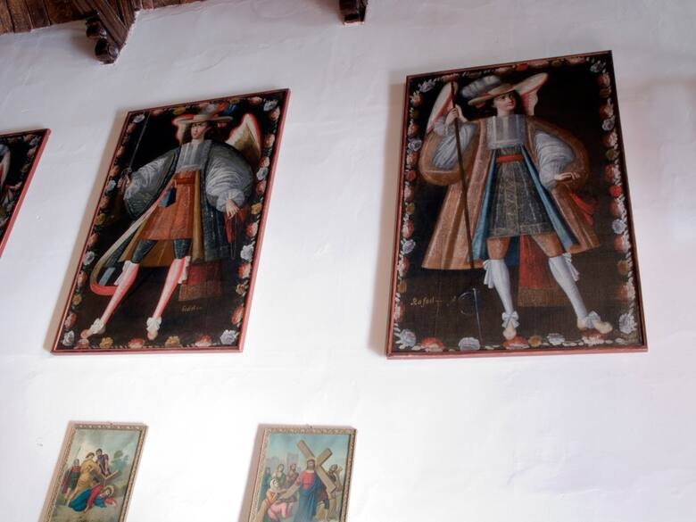

El desentierro del diablo: Todo lo que debes saber
Descubrí la magia de nuestro carnaval de la Quebrada. Todo empieza el Sábado de desentierro...
Leer más →Conocé historias increíbles de viajeros y consejos locales.
Descubrí la magia de nuestro carnaval de la Quebrada. Todo empieza el Sábado de desentierro...
Leer más →
Una guía completa sobre qué llevar para adentrarte en el Parque Nacional de yungas y selva.
Leer más →
Te mostramos 5 lugares en San Salvador donde probarás las empanadas más ricas del norte.
Leer más →
Descendí a los salares con una auténtica caravana de llamas liderada por guías expertos.
Leer más →
Llegar a los 4300 metros para ver el cerro de 14 colores no es fácil, te contamos cómo prepararte.
Leer más →
Los espejos de agua de El Carmen son ideales para desconectar y practicar pesca deportiva turística.
Leer más →Te mostramos el trabajo artesanal de los trajes y la energía de las murgas en San Pedro.
Leer más →
Hablamos sobre los Ángeles Arcabuceros, una de las joyas de la pintura cuzqueña en el norte.
Leer más →
Una experiencia única de ecoturismo sustentable para sentir la montaña a otro ritmo local.
Leer más →
Comentarios Recientes de la Comunidad
Excelente artículo sobre el carnaval. ¡Acabo de sacar pasajes para el año próximo!
Para la ruta de la empanada, agregen "El Hornito de Don Juan", son espectaculares.
Muy buena info sobre el Hornocal. Sugiero llevar un té de coca bien caliente en un termo para el apunamiento.
¿Tienen agencias recomendadas para la caravana de llamas? Me encantaría llevar a mis hijos el próximo julio.
Uquía es hermoso y re tranquilo. Hay un par de lugares gastronómicos detrás de la iglesia que valen oro.